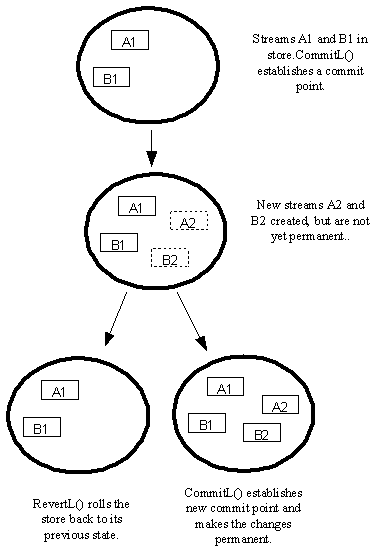

|
| |
A transaction is a series of operations on a store, normally
completed by committing them using the store's CommitL() function.
Transactions are supported by the commit and revert protocol.
The series of operations forming a transaction must all succeed for the transaction to be successful.
If a leave occurs during an operation on the store during a
transaction, or if the store's RevertL() function is called
explicitly, the transaction is reverted. This facility parallels the commit and
rollback functions which are conventional in databases. However, reverting is
not quite the same as rolling back; integrity of data is guaranteed, but some
indexes may be corrupted.
The commit and revert protocol is useful for ensuring that persistent data moves from one consistent state to another and for guaranteeing the integrity of persistent store data in the event of failures.
Typically, changes to a store are not made permanent until they are committed, establishing what is called a commit point. Until such changes are committed, they can be rolled back or reverted, effectively causing the store to revert back to its state before the changes were made. If a process termination or a media failure occurs, the store reverts automatically to its state at the last successful commit point.
In permanent file stores the protocol applies to:
generating new streams
deleting streams
creating new streams
replacing streams
setting the root stream
The protocol also applies to creating new streams or replacing existing streams in dictionary stores.
The protocol does not apply to overwriting existing streams.
The following diagram shows the idea:

Copyright ©2002 Symbian Ltd. 6.1-00174 |
|